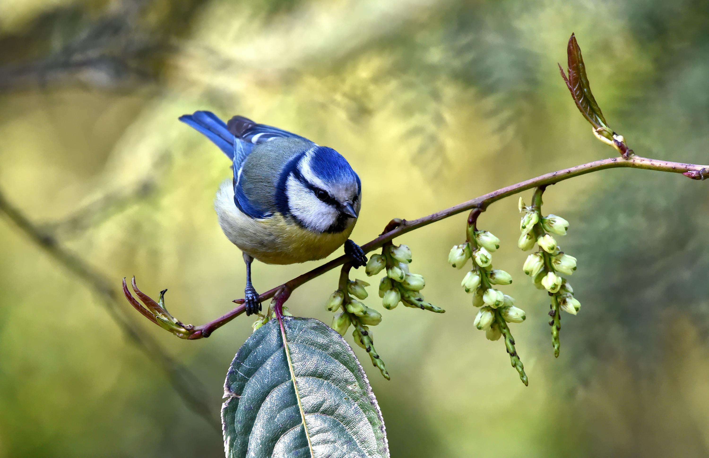

All About Birds
What is a bird?
Birds are a group of warm-blooded vertebrates characterised by feathers, toothless beaked jaws, the laying of hard-shelled eggs. They live worldwide and come in a huge variety of sizes, from the 5.5 cm (2.2 in) bee hummingbird to the 2.8 m (9 ft 2 in) ostrich. There are over 11,000 different spieces of birds. A somewhat unique trait of birds are their wings, which all birds have execpt the extinct Moa and Elephant Birds. Birds are thought to be closely related to reptiles, as they both orignated from dinosaurs. The first bird likely was the Archaeopteryx.
Behavior
Diet
What does a bird eat? Different types of birds will eat different types of food. Some birds will eat insects, some will eat leaves and seeds, and some will eat other animals. Smaller birds such as finches, sparrows and pigeons maily eat seeds and insects, while birds of prey such as falcons, eagles, and hawks mainly eat squrirrels, rabbits, and other birds.
Migration
Many bird species migrate to take advantage of global temperature differences. Many different bird speices undertake the annual long-distance journey which is usually triggered by the length of daylight or by weather conditions. Prior to migration, birds will increase body fats and reduce the size of some organs. Migrations range from the 300 meter migration of the North American Blue Grouse which fly from pine forests to deciduous woodlands to the 94,000 kilometer Arctic Tern who fly from Greenland and Iceland to Antarctica.
Communication
From sounds to feather patterns, birds communicate in many different ways. Bird sounds come in a variety of volume, picth, and duration. They use sounds to attract mates, evaluate potential partners, form bonds, claim and maintain territory, and the identification of potential predators, sometimes with specific imformation about the threat. They also use feathers and plumage to communicate. Feathers can be used to assert dominace, impress females, make threatening displays, and ward of predetors.